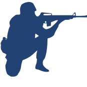
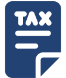
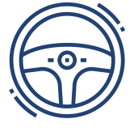
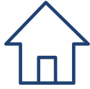

ПОНОВЛЕННЯ ДОКУМЕНТІВ
За роки багаторічної практики діяльності Нашої Компанії, ми не один десяток разів рятували людей в документальному просторі їхнього життя - створюючи нову історію для них: від неіснування жодних документів на початку - до щасливої присутності “повного пакету” документів в кінці результату по їх поновленню. Під час війни - таких історій багато!.. Непередбачувані обставини, за яких документи губляться чи забрати їх немає можливості, а на їх відновлення потрібно витратити вдосталь часу, зусиль, а інколи і тисячі кілометрів шляху. Опинились в такій ситуації?
Читайте ↓ та телефонуйте до нас.
Залишайте Ваше звернення і наш юрист зателефонує Вам у лічені секунди
ПОНОВЛЕННЯ ДОКУМЕНТІВ ПІСЛЯ ВТРАТИ
Сьогодні документом, який визначає приналежність особи до держави України і підтверджує громадянство, є паспорт громадянина України. В умовах війни громадяни України нерідко втрачають не тільки цей документ, а й інші, які є дуже важливими для кожного з нас. На поновлення будь-якого документа Ви може витратити дуже багато часу та нервів, адже сама процедура є досить складною, довгою в часі та нездійсненою в сьогоденні.
Наша компанія може допомогти вам знайти вихід з будь-якої ситуації та проконсультувати в відновленні Ваших документів або допомогти в народженні Вашої нової історії життя, якщо у Вас до сьогоднішнього дня документи були відсутні взагалі. Ми надаємо юридичну допомогу в отриманні, поновленні чи витребуванні для Вас наступних документів:
-
документи органів РАЦС (свідоцтво про народження, свідоцтво про шлюб, свідоцтво про розлучення, свідоцтво про зміну імені, витяги з реєстру РАЦС тощо. Ми оформимо їх без Вашої присутності - зробимо так, щоб Ви знаходячись за тисячі кілометрів від органу видачі - отримали успішний результат)
-

особисті документи ( внутрішній та закордонний паспорт, для іноземців - постійна або тимчасова посвідка на проживання)
-
освітні документи ( атестат зі школи, диплом з університету тощо)
-

військові документи ( приписне посвідчення та військовий квиток)
-
морські документи ( паспорт моряка, робочий диплом і підтвердження, сертифікати, послужна книжка)
-

документи юридичної особи та податкові документи ( ідентифікаційний код, витяг про реєстрацію юридичної особи, податкові декларації тощо)
-

водійське посвідчення, медична довідка, технічний паспорт
-

документи про реєстрацію місця проживання/зняття з місця проживання
Інколи, якщо в результаті перевірок не встановлено особу громадянина, який втратив документ, проводиться обов’язкова процедура встановлення особи.
ПОНОВЛЕННЯ ДОКУМЕНТІВ ПІСЛЯ ВТРАТИ ДЛЯ ІНОЗЕМЦІВ
Якщо Ви іноземець! Загубили важливий документ і не знаєте, куди
звернутись?
Не панікуйте!
Юристи Нашої компанії допоможуть вам навіть у найскладнішій
ситуації.
Ми зможемо надати консультацію по відновленню
таких документів:
-
1. закордонний паспорт іноземця
-
2. тимчасова або постійна посвідка на проживання
-
3. освітні документи, видані в Україні
-
4. документи з органів РАЦС ( свідоцтво про шлюб, свідоцтво про народження дитини тощо) та податкової ( ідентифікаційний код)
-
5. документи юридичної особи ( якщо така зареєстрована в Україні на ваше ім’я)
інші документи, які потрібно буде витребувати навіть з-за кордону.
ВСТАНОВЛЕННЯ ОСОБИ
Дана процедура стосується в більшості тих осіб, які вперше отримують паспорт, але до 18 років не звернулися до територіального підрозділу міграційної служби з відповідною заявою, і не були документовані паспортом. Проте, навіть якщо ви вже отримували паспортний документ, але за певних обставин втратили всі документи, які можуть встановити/підтвердити особу - проводиться відповідна процедура.
Для цього від особи потрібно письмове пояснення і оригінали/копії наявних документів з фотокартками, а для осіб, які отримують паспорти вперше, можливо надання засвідчених довідок з фотокартками з останнього місця навчання.
За відсутності таких документів з метою встановлення особи може бути проведено опитування родичів, сусідів або будь-яких інших осіб (не менше трьох). За результатами їхніх свідчень складається акт встановлення особи, відбуваються перевірки в різних установах, і видається паспорт громадянина України.
Маєте питання? Не гайте час, зателефонуйте до професіоналів. Ми зробимо повний аналіз Вашої ситуації і підберемо оптимальний шлях для її вирішення. Ми Команда, яка працює на результат!
Ми Команда, яка працює на результат!
КОМАНДА KOVAL LEGAL GROUP
Професіонали, які щоденно допомагають навіть у безвихідних
ситуаціях!
Ми – висококваліфіковані Юристи, які знають закони і блискуче
застосовують їх на практиці.